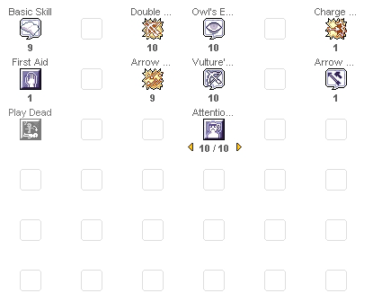
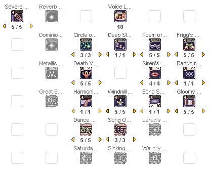
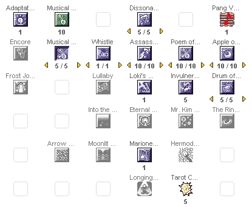
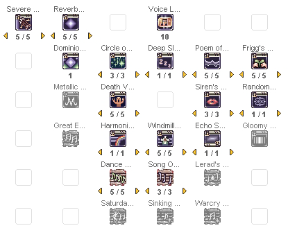
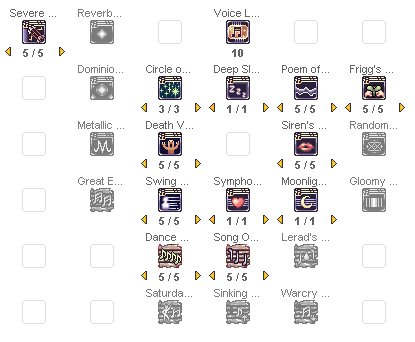
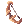

DualityDiscretion's Maestro and Wanderer Guide
| This guide has not been updated in a while. | ||
|---|---|---|
| Information on this page may be obsolete and outdated. Please refer to the author for information on future updates. |
||
| Maestro & Wanderer | |
|---|---|
 | |
| Job Base: | Archer |
| Written By: | dualityDiscretion |
Overview
Maestros and Wanderers, also known collectively as Performers, are the third job classes of Bards and Dancers. They are mainly a support class, having a wide variety of unique skills they can use to support their teammates and disrupt their enemies. In many cases, especially for Maestros, they are an indispensable part of an optimal party.
They start out as an Archer, which means they're relatively easy to level in the earlier stages, due to having long range offensive skills like Double Strafe and Arrow Shower, as well as access to elemental arrows. Unlike the DPS-oriented Rangers, however, they tend to take on a more supportive or hybrid role from 2nd job onwards.
Additionally, unlike many other classes, Performers do not have any essential Transcendent skills. This means that Baby Performers are not too much different functionally compared to adult ones; the only main drawbacks being the reduced MaxHP/SP and less 2nd job Skill Points to spend.
This guide will only cover the PVM aspect of the gameplay.
Maestro or Wanderer
It should be noted that there's a stark difference between the two classes, despite sharing many of the same skills.
Maestros are notably more commonly used in party play, mainly because their signature song, Poem of Bragi, is essential to maximising the DPS output of most classes. In addition, their signature chant Windmill Rush is also more broadly used, as there are more classes that use ATK than there are that use MATK.
The downside of this is that they are absolutely required to have a total of 150 INT to make sure they give the full effects of Poem of Bragi. This means that their stat and equipment builds are somewhat more limited, which means they cannot focus solely on increasing damage.
Wanderers on the other hand, are less commonly sought for in the rando PVM scene, partially because their signature song, Services for You, is non-essential to most parties, and overlaps in function with a Sorcerer's Soul Change. Their signature chant, Moonlight Serenade, is also only useful for a handful of classes like Warlock, Sorcerer, Arch Bishop, and Ninja, which uses MATK instead of ATK. In most cases, you would want to join a guild to make it easier to get parties that synergize with your Wanderer.
On the upside, Wanderers don't need to build a specific stat for their supportive function, as Services for You works well even with relatively low INT. This means that they can focus fully on damage, and can reach higher DPS potentials in party play compared to Maestro. In addition, as a Wanderer in a party, you will get the effects from Poem of Bragi if there is a Maestro in your party, making it possible for you to use a Reverberation build in most parties when Maestros usually can't.
Stats
The Performer are a very special kind of class, whose stats directly affect the effectiveness of their supportive skills. Their main Stats are DEX, INT, and VIT.
| Stat | Notes | Affected Songs |
|---|---|---|
| DEX | Increases ATK when using Bow, Instrument, or Whip; increases HIT; reduces Variable Cast Time.
An essential stat for any performer. Aside from its primary effects, it also directly increases the damage of the skill Severe Rainstorm. Having 120 DEX is mandatory for activating Temporal DEX Boots' bonus effects. Recommended amount: 120 |
|
| INT | Increases MaxSP and SP regeneration; reduces Variable Cast time; increases MATK.
Resistance: Blind, Sleep, and Silence. Another essential stat for performers, as aside from its primary effects for SP management, it also improves the effects of their most important songs. Additionally, MATK also plays a role in improving the damage of the skill Reverberation. For Maestros, it is absolutely mandatory to have a total of 150 INT (counting bonuses) to be able to give 100% Cast Delay Reduction with Poem of Bragi. Recommended amount: 80~120 |
|
| VIT | Increases MaxHP and HP regeneration;
Resistance: Blind, Curse, Poison, Silence, and Stun. An important stat for performers as a support class. As they are often considered an indispensable asset in parties, having high survivability is recommended. It is important to aim for at least a total of 100 VIT (counting bonuses) to gain Stun and Curse immunity. Recommended amount: 90~110 |
|
| AGI | Increases FLEE and ASPD.
Resistance: Bleeding and Sleep. A useful stat to raise if you want to do damage. The FLEE and ASPD increase is very useful in the early game, and later on, it also directly increases the damage of the skill Severe Rainstorm. Recommended amount:60~80 for support, 100~120 for damage |
|
| STR | Increases ATK per 5 points when using Bow, Instrument, or Whip; increases weight limit.
Optional stat for Performers. It is usually only raised for increasing Weight Limit, as it has little use besides that. If you really have trouble with your Weight Limit, I would recommend using Gym Passes instead of raising STR too high. Recommended amount: 1~40 |
|
| LUK | Increases ATK, MATK, HIT, and CRIT per 3 points; increases Perfect Dodge per 10 points
Resistance: Various, minor. Optional stat for Performers, as CRIT and Perfect Dodge are rarely utilised by this class. Additionally, this stat only gives a minor contribution to your song's effects, so there's no significant benefit in raising it too high. Recommended amount: 1~40 |
|
Stat Builds
| Maestro Job bonuses | |||||
|---|---|---|---|---|---|
| STR | AGI | VIT | INT | DEX | LUK |
| +7 | +5 | +7 | +9 | +8 | +1 |
| Wanderer Job bonuses | |||||
| STR | AGI | VIT | INT | DEX | LUK |
| +3 | +9 | +7 | +9 | +8 | +1 |
Keeping in mind that stats only contribute to a small portion of your songs' effectiveness (the larger portion coming from the song's skill level and Musical/Dance Lessons), the example stat builds below will tend more towards maximising damage potential.
Take these examples with a grain of salt, and tweak or modify them according to your needs and gear availability. Don't forget that you can always reset at Main Office if you ever need to adjust your stat to new gear or different party setups.
Severe Rainstorm Hybrid
- STR: 30
- AGI: 112
- VIT: 94
- INT: 100
- DEX: 120
- LUK: 30
This build puts DEX and AGI at the highest priority as they directly boost the damage of Severe Rainstorm, while keeping a good distribution of the other stats.
For Maestros, this build gives you a base amount of 100+9 INT. With Clementia, you will need 25 more INT to reach 100% Delay Reduction with Poem of Bragi. Without Clementia, you will need 41 more INT.
Support-focused Hybrid
- STR: 30
- AGI: 72
- VIT: 100
- INT: 120
- DEX: 120
- LUK: 30
This build puts DEX and INT at the highest priority to balance between damage and SP upkeep, putting VIT at second priority for survivability. This build works best for supporting smaller parties, or when your party does not have an Arch Bishop. Additionally the higher INT also allows for higher damage potential with Reverberation.
For Maestros, this build gives you a base amount of 120+9 INT. With Clementia, you will only need 5 more INT to reach 100% Delay Reduction with Poem of Bragi. Without Clementia, you will need 21 more INT.
Skills
Performers have a wide array of unique skills called Songs. They are classified into 3 groups: Solo Songs, Ensembles, and Choruses. For the purposes of this guide, the third job Solo Songs will be called Chants.
The following is a list of important skills that Performers must be familiar with in PVE environments. Non-essential skills have been omitted.
2nd Job Songs
Solo Songs
These skills require the caster to be wearing an Instrument/Whip to be cast.
All of these skills create a 7x7 Area of Effect around the caster that follows the caster as they move until the skill is cancelled. Any player (excluding the performer) that is within the AoE will receive the effect, and the effect lingers on the affected player for 20 seconds after leaving the AoE.
| Bard Solo Songs | ||
|---|---|---|
| Skill | Description | Formula |
 Poem of Bragi Poem of Bragi
|
Reduces Variable Cast Time and Cast Delay of any player within the AoE.
A Bard's most important song. With skill level 10, Musical Lessons lv10, and 150 INT, this skill can completely eliminate Cast Delay, which makes it essential for maximising the DPS of your party members. Recommended level: 10 (Mandatory) |
Variable Cast Time Reduction: Cast Delay Reduction: |
 Apple of Idun Apple of Idun
|
Increases MaxHP of any player within the AoE while healing a small amount of HP every 6 seconds.
Although not essential, this song is still great for improving party survivability as well as boosting a Rune Knight's Dragon Breath damage. Include this in your song flashing cycle when possible. Recommended level: 10 |
MaxHP Bonus: Healing Amount: |
 Assassin Cross on Sunset Assassin Cross on Sunset
|
Increases the ASPD of players within the AoE. Does not work with Bows and Firearms.
This song makes it very easy for many classes to reach 193 ASPD, helping them maximise their DPS potential especially when paired with the effects of Poem of Bragi. Keep in mind that this buff is virtually useless for Rangers and Rebels. Recommended level: 5~10 |
ASPD Bonus: Note: This bonus is considered Status Bonus, and is further affected by the receiver's AGI. See ASPD Formula for more details. |
 A Whistle A Whistle
|
Increases the FLEE and Perfect Dodge of players within the AoE.
Not quite as useful as the Bard's other songs. FLEE is quickly rendered useless when being attacked by multiple enemies, while the Perfect Dodge bonus only become substantial if you sacrifice a lot of your other stats in favour of LUK. Recommended level: Optional |
FLEE Bonus: Perfect Dodge Bonus: |
| Dancer Solo Songs | ||
|---|---|---|
| Skill | Description | Formula |
 Service For You Service For You
|
Increases MaxSP of any players within the AoE while reducing the SP cost of their skills.
The Dancer's main song. With its significant SP cost reduction, this song can often make your party member's SP seem infinite, especially when paired with Magnificat. This also boosts a Rune Knight's Dragon Breath damage. Recommended level: 10 (mandatory) |
MaxSP Bonus:[Floor(15 + SkillLv + INT ÷ 10 + Dance_Lessons_Lv ÷ 2)]%
SP Cost Reduction: |
 Fortune's Kiss Fortune's Kiss
|
Increases CRIT of players within the AoE.
A fantastic skill for helping CRIT-build classes to reach max CRIT rate, as it easily grants at least 20 CRIT at level 10, even if you only have 1 LUK. Additionally, this can also be useful for helping your non-CRIT-build party members hit monsters with AGI UP when needed. Recommended level: 10 |
CRIT Bonus: [SkillLv + Floor(LUK ÷ 10) + Dance_Lessons_Lv]%
|
 Please Don't Forget Me Please Don't Forget Me
|
Reduces the Movement Speed and ASPD of enemies within the AoE.
Unlike other songs, this is a debuff skill, and works best for assisting tanks when they are pulling a big mob. Aside from the useful Movement Speed debuff, this song also shines through the significant ASPD penalty (ideally 40% reduction or more) that, unlike statuses like Frozen or Stone Curse, cannot be resisted nor cured in any way. However, keep in mind that you need to be in close range to apply this debuff, meaning you will need to practice flashing the song quickly then escaping back to safety. Recommended level: 5~10 |
ASPD Penalty:[(SkillLv x 3) + Floor(DEX ÷ 15) + Dance_Lessons_Lv]%
Movement Speed Penalty: |
 Humming Humming
|
Increases HIT of players within the AoE.
Not as useful as the other Dancer songs. The HIT bonus is relatively insignificant, even if you have tons of DEX to boost it. Recommended level: Optional |
HIT Bonus:20 + (SkillLv x 2) + Floor(DEX ÷ 15) + Dance_Lessons_Lv
|
Note: If two Bard songs or two Dancer songs combine AoEs, the cells that clash become a Dissonance/Ugly Dance and lose their effects. In such cases, the song must be recast to apply the effects again. However, a Bard song and a Dancer song can combine AoEs with no negative effect.
Poem of Bragi

Service for You
Clashing songs
Ensembles

These songs require one Bard and one Dancer to be in a party and standing next to each other to be cast. Both performers must be wearing an Instrument/Whip, and they must also have learned the skill. Either performer can initiate the skill, but once it is active, both performers will not be able to move, cast skills, or attack, until the song ends or is cancelled.
Unlike Solo songs, the effects of Ensembles do not linger. Once a player leaves the AoE or the skill is cancelled, the effect disappears.
| Ensembles | |
|---|---|
| Skill | Description |
 Drums of the Battlefield Drums of the Battlefield
|
Grants up to 250 ATK and 50 DEF to party members within the AoE.
This skill is amazing for increasing DPS due to the substantial ATK bonus, and should be used whenever the situation allows it. Recommended level: 5 |
 Invulnerable Siegfried Invulnerable Siegfried
|
Increases party members' resistance against elemental property attacks (excluding Neutral) by up to 80%, and their resistance to Status effects by up to 50% while they're in the AoE.
This is great when battling bosses that use elemental attacks, such as the ones in Temple of the Demon God. Recommended level: 5 |
 Into the Abyss Into the Abyss
|
Removes one gemstone requirement of any skills cast by anyone within the AoE.
This can be very useful for certain skills such as Safety Wall and Abracadabra. However, I would not recommend getting it unless it's absolutely necessary, since its pre-requisite includes A Whistle/Humming level 10. Do note that this only removes ONE gemstone requirement, therefore if a skill requires two gemstones, it will still consume one upon casting. Recommended level: Optional |
 Mr. Kim a Rich Man Mr. Kim a Rich Man
|
Increases EXP and JEXP gained by party members within the AoE by up to 80%.
This is somewhat of a niche skill mainly used for leveling with a camping strategy. Recommended level: Optional |
Other Skills
| Other Skills | |
|---|---|
| Skill | Description |
 Musical Lessons Musical Lessons
|
Passive Skill. Grants MasteryATK when wearing Instrument/Whip type weapons. Reduces Movement Speed penalty when casting songs, and significantly improve the effects of your Solo Songs.
This is a Performer's most important Passive Skill, as it provides crucial bonuses to improve your songs' effectiveness. Recommended level: 10 (Mandatory) |
 Adaptation to Circumstances Adaptation to Circumstances
|
Cancels the currently active 2nd job Song or Ensemble. This skill can only be cast when the current song has played for at least 5 seconds.
Never use this skill. Instead, it is much more efficient to cancel songs by swapping weapons, as it does not have any minimum duration requirement. See Gameplay Section below. Recommended level: 1 (Pre-requisite) |
 Encore Encore
|
Recasts the last played Solo Song or Ensemble at half the SP cost. Requires Instrument/Whip to be cast.
This can be very useful in the early levels when your SP pool is still relatively low. However, it rarely serves a purpose in the end-game, since it is preferable to cycle through different songs quickly instead of casting the same one over and over. Recommended level: Optional |
| Longing for Freedom | Transcendent skill. While in an ensemble, casting this skill will allow the caster to move within the ensemble AoE, as well as attack and use skills.
Mostly a niche skill that's only useful if your main offensive skill is Arrow Vulcan, due to the fact that switching to a Bow will still cancel the song. Recommended level: Optional |

3rd Job Songs
Chants

These skills require an Instrument/Whip to be cast.
Unlike the 2nd job Solo Songs, Chants, or Group A songs, work more like an Arch Bishop's party-wide buff. However, these songs do not stack, and only one can be active at any time. Casting a different Chant while one is already active will replace it with the new one.
| Chants | ||
|---|---|---|
| Skill | Description | Formula |
 Windmill Rush Windmill Rush
|
Maestro Skill. Increases the ATK of party members within a wide AoE.
This is usually the most preferred chant due to the fact that most classes rely on ATK for their damage. Recommended level: 5 |
ATK Bonus:(SkillLv x 6) + Voice_Lessons_Lv + (JobLv ÷ 5)
|
 Swing Dance Swing Dance
|
Wanderer Skill. Increases ASPD and Movement Speed of party members within a wide AoE.
This is the commonly preferred Wanderer chant as it can help increase DPS through the ASPD bonus. Additionally, the Movement Speed bonus is useful when there is no Arch Bishop in the party. However, in the uncommon case of a party setup with primarily Magic DPS instead of Physical, you can replace this with Moonlight Serenade in your build. Recommended level: 5 or 1 |
ASPD Bonus:[(SkillLv x 5) + Voice_Lessons_Lv]%
|
 Moonlight Serenade Moonlight Serenade
|
Wanderer Skill. Increases the MATK of party members within a wide AoE.
This is the less-commonly preferred Wanderer chant. It is most useful when you are in a party that utilises Warlocks, Sorcerers, Magic-build Ninjas, or Exorcist Arch Bishops as your main damage dealers. Recommended level: 1 or 5 |
MATK Bonus:(SkillLv x 6) + Voice_Lessons_Lv + (JobLv ÷ 5)
|
Choruses

The skills below require an Instrument/Whip to be cast.
Like Chants, Choruses or Group B songs apply buffs to the party in a wide AoE, and does not stack. Additionally, most of these skills require at least two performers (regardless of gender) in the party to be cast, and the effect of the skill is amplified when there are more performers present. Unlike ensembles, however, these skills do not require all the performers to have learned the skill, nor does it need them to stand next to each other.
Each of these skills have lengthy cooldowns, so be sure to coordinate with the other Performer(s) to take turns casting them.
| Choruses | ||
|---|---|---|
| Skill | Description | Formula |
 Song of Mana Song of Mana
|
Grants a passive SP recovery every 5 seconds to party members within the wide AoE.
This is the preferred Chorus as it helps with SP upkeep, albeit the effect is relatively minor (10 SP per 5 seconds with 2 performers). This skill is especially useful when there is no Wanderer in the party. Additionally, the SP recovery is still active even when over 50% weight. Higher levels extend the duration. Recommended level: 3~5 |
SP Recovery:(Performers x 5) / 5 seconds
|
| Dance with Warg | Increases ASPD and reduces Fixed Cast time of party members within the wide AoE. Additionally, this also greatly increases the damage of Ranger's Warg skills.
This Chorus mainly shines for buffing Auto-Warg type rangers, but it's still a useful Chorus in general if SP upkeep is not an issue. Recommended level: 3~5 |
ASPD Bonus:[5 + (Performers x 5)]%
FCT Reduction: Warg Damage Bonus: |
 Circle of Nature Circle of Nature
|
Recovers your party member's HP by up to 200 per second while draining their SP by up to 20 per second. Can be cast with only 1 Performer in the party.
Never use this skill. Your party will absolutely HATE you when they find out you're the reason they keep running out of SP. Use Frigg's Song instead. In the case of another performer casting this skill in your party, you can use a Chorus skill or Siren Song to overwrite the effect on your party members. Recommended level: 3 (Pre-requisite only) |
- |
Other Skills
The active skills listed below require an Instrument/Whip to be cast.
| Other Skills | |
|---|---|
| Skill | Description |
 Voice Lessons Voice Lessons
|
Passive skill. Increases your MaxSP and gives you a passive SP recovery every 10 seconds.
At level 5, allows you to cast 3rd job skills (including Chants, Choruses, and other skills listed below) while casting 2nd job Songs. It also improves the effects of some Chants. Recommended level: 10 |
 Frigg's Song Frigg's Song
|
Increases the MaxHP of the caster and all party members within the wide AoE by up to 25%, as well as recovering some HP every second.
An amazing skill for both party and solo purposes as the HP increase and recovery is very substantial. It could even cover a Healer role when there is no Arch Bishop in the party, albeit less effectively. This skill also helps increase the damage of Rune Knight's Dragon Breath. Consumes 1 Regrettable Tear. Recommended level: 5 |
 Death Valley Death Valley
|
Resurrects a dead player with a very small chance of failure, while consuming a 50%~10% of their SP. The target will be revived with HP equal to the SP they had while dead.
This skill is not much different from Resurrection through using a Yggdrasil Leaf, but it does have a noticeably shorter Cast Time, a significantly lighter catalyst (0.2 weight as opposed to Ygg Leaf's 10 weight), and is able to resurrect players who are wearing Evil Druid carded armor or affected with Satan Morroc's Hell Power debuff. However, make sure you're using Lv 5 to minimise the SP penalty. Consumes 1 Regrettable Tear. Recommended level: 5 |
 Poem of the Netherworld Poem of the Netherworld
|
Place a musical note on the ground that will immobilise an enemy that steps on it for up to 16 seconds.
This is very similar to Ankle Snare, but a lot more practical as it can be placed from several cells away and even affects hidden enemies. However, this skill does not immobilise boss protocol monsters. Consumes 1 Throat Lozenge. Recommended level: 5 |
 Gloomy Day Gloomy Day
|
When cast on a target who has learned Brandish Spear, Clashing Spiral, Rapid Smiting, Shield Boomerang, or Shield Press, significantly boosts the damage of those skills, with a small chance to reduce the target's movement speed and strip their mount.
When cast on a target without those skills, applies a FLEE and ASPD penalty. This song is considered a Group B song, and therefore can only be replaced by Choruses and Siren Song. This skill is mainly recommended for its debuff effect, as it can be extremely useful to reduce the FLEE of enemies with AGI UP. Particularly enemies like Cecil in Biolab 3, Trentini and Alphoccio in Biolab 4, and Suffering Khalitzburg in Old Glast Heim. Additionally, this skill is a key component in party setups that utilises Spiral Pierce build Rune Knights as the main DPS. Recommended level: 1-5 |
 Siren's Voice Siren's Voice
|
Charms monsters and players on screen, making them unable to attack the caster temporarily. Higher levels increase AoE, duration, and chance of effect. Duration is reduced by the enemy's level.
Very useful in solo situations as it can "tame" a big mob temporarily, making them stop attacking long enough for you to escape death. Keep in mind, however, that the monsters will only stop attacking the caster. Therefore, in a party situation, the mob will turn to attack your party members instead. Additionally, since this song is considered a Group B song, this can be used to replace other unwanted Group B songs, such as Circle of Nature and Gloomy Day, from your party members. Adversely, this can also replace Song of Mana and Dances with Warg, therefore it's recommended to use this skill sparingly. Keep in mind that this skill does not actually affect the caster, so it will not replace Group B songs from your own character. Recommended level: Optional |
Offense
| Offensive Skills | |
|---|---|
| Skill | Description |
 Owl's Eye Owl's Eye
|
Passive skill. Permanently increases DEX by 1 per skill level.
A fantastic passive skill you get as an Archer which helps with improving damage, especially with Severe Rainstorm. Recommended level: 10 |
 Vulture's Eye Vulture's Eye
|
Passive skill. Increases your attack range by 1 cell per skill level when using a Bow.
A must-have for any Archer, but for Performers, it's arguably not essential to have level 10. Recommended level: 9~10 |
 Improve Concentration Improve Concentration
|
Increases your AGI and DEX by up to 12% for up to 6 minutes.
This skill is an essential self-buff for any Archer-based class, and should be kept active at all times. Recommended level: 10 |
 Double Strafe Double Strafe
|
Deals up to 380% ranged physical damage to a single target.
Your bread and butter single-target skill as an Archer, which remain useful even after advancing to 2nd and 3rd job. This skill can be used in conjunction with Severe Rainstorm to deal some extra damage, and is especially effective when you spam it with high ASPD. Recommended level: 10 |
 Arrow Shower Arrow Shower
|
Deals up to 250% ranged physical damage to enemies in a 5x5 AoE while knocking them away from the targeted cell.
An extremely useful offensive skill for leveling as an Archer which also remains useful after advancing to 2nd and 3rd job. Although it's not spammable like Double Strafe due to its fixed animation, it's still useful for dealing extra damage to multiple enemies at once. Additionally, the knockback effect is good for pushing your enemies around, especially to keep them away from you, or to push them into an offensive AoE such as your own Severe Rainstorm, a Sorcerer's Psychic Wave, or a Priest/Arch Bishop's Magnus Exorcismus. Recommended level: 9~10 |
 Arrow Vulcan Arrow Vulcan
|
Transcendent skill. Deals up to 1200% ranged physical damage to a single target. Requires Instrument/Whip.
It has considerably high damage (especially when using the right equipment), but the hefty cast delay and lengthy animation makes it somewhat unreliable, especially after advancing to 3rd job and getting Severe Rainstorm. Only take this skill if you really plan to use it. Recommended level: 0 or 10 |
| Severe Rainstorm | Creates a rain of arrows in an 11x11 AoE that deals up to 12 hits to all enemies within it throughout its duration. The damage is directly affected by DEX and AGI.
This will be your main offensive skill as Maestro or Wanderer. With the right equipment and element, it can deal as high as 12k damage per hit, or even higher when special buffs like Hawk Eye activates. You cannot switch weapons while the AoE is ongoing, but you can use other Bow skills to maximise your DPS. Bow exclusive skill. Recommended level: 5 |
 Reverberation Reverberation
|
Place a musical note on the ground that when stepped on by an enemy or when its duration runs out, explodes to deal up to 800% ATK + 600% MATK in a 5x5 AoE. Can be cast while playing a Solo Song or an Ensemble.
A notably powerful offensive skill that is overlooked by most performers. Its two main drawbacks are that the damage is unaffected by Ranged modifiers, and its trigger range is only 1x1 instead of 3x3 like most ground trap skills. With Bragi, this skill easily out-damages both Arrow Shower and Double Strafe as complements to Severe Rainstorm. Take this skill if your party setup allows you to use it to its full potential. Recommended level: 0 or 5 |
 Dominion Impulse Dominion Impulse
|
Detonates all Reverberation charges within a 11x11 AoE around the targeted cell.
Arguably non-essential, since there's no limits to how many Reverberations you can place. However, it can still be useful if you happen to misplace your Reverbs by 1 or 2 cells and you want to detonate them. Recommended level: Optional |
 Metallic Sound Metallic Sound
|
Deals up to 1200% MATK (with Voice Lessons level 10) to a single target and drains their SP.
A burst damage skill that shines especially in PvP situations, due to the massive SP drain capability. However, due to it being single-target with a lengthy 4 second cooldown, it is a lot less reliable in PvM compared to Severe Rainstorm. Recommended level: Optional |
Miscellaneous
| Miscellaneous Skills | |
|---|---|
| Skill | Description |
 Frost Joke Frost Joke
|
Bard Skill. This skill causes enemies and players in the screen to become frozen by up to 40% chance.
It has great uses in PvP, but is quite unreliable in PvM as it can easily freeze your party members as well. Recommended level: Optional |
| Scream | Dancer Skill. This skill causes enemies and players in the screen to become stunned by up to 50% chance.
Unlike Frost Joke, Stun is easily resisted by VIT, making it somewhat usable in endgame parties since your party members are usually immune to it. However, due to its hefty Cast Delay, I only recommend using it when you're affected by Bragi. Recommended level: Optional |
 Marionette Control Marionette Control
|
Transcendent skill. Bestow half of the caster's stats to the targeted party member, but the resulting number cannot exceed 99.
Due to the fact that most players would have more than 99 base stat by default, this has little practical use in actual PvM. However, this is very useful in helping Geneticists increase their brewing/cooking success rate. Recommended level: 1 |
 Tarot Card of Fate Tarot Card of Fate
|
Transcendent skill. When cast on a target, it has an up to 40% chance of applying a random effects depending on the tarot card that appears.
It has its uses in PvP, but is mainly for-fun in PvM. Recommended level: Optional |
 Improvised Song Improvised Song
|
3rd Job skill. Casts a random Mage or Wizard spell.
This is mainly for-fun as it is not very reliable for doing actual damage. Recommended level: Optional |
Skill Build
When it comes to skills, Maestros and Wanderers do not often need to change their builds, as their core skills will always remain the same. Usually, the only skills that are switched in and out are the Optional ones, such as Ensembles, Frost Joke/Scream, Gloomy Day, and Improvised Song.
Below are example builds with various choices of Optional skills being taken. Keep in mind that none of these are "the best build", and you should customise them according to your play-style and your party's needs.
(Note: This is due to be updated soon because Gloomy Day is no longer optional)
| Archer Skills |
|---|
|  |
| Maestro with Frost Joke, Tarot, Siren, and Gloomy Day | |
|---|---|
| Clown Skills | Maestro Skills |
 |
 |
| Wanderer with Scream, Reverb, and Gloomy Day | |
|---|---|
| Gypsy Skills | Wanderer Skills |
 |

|
| Maestro with Tarot, Reverb, Siren, and Dominion Impulse | |
|---|---|
| Clown Skills | Maestro Skills |
|  |  |
| Note: Since you cannot receive the effects of your own songs, you will need another Maestro in the party to be able to use Reverberation to its full potential. | |
| Wanderer with Longing for Freedom, Arrow Vulcan, and Siren Song | |
|---|---|
| Gypsy Skills | Wanderer Skills |
 |
 |
| Note: 3 Third Job skill points used in Second Job skills. | |
Equipment
Headgear
| Item | Location | Acquisition | Additional Notes |
|---|---|---|---|
| Maestro Song Hat [1] (Maestro)
Dying Swan [1] (Wanderer) |
Upper | Job Change | INT +1, LUK +1, MDEF +5. Increases Ranged Damage by 5%. Decreases SP cost of Windmill Rush/Swing Dance by 10. Both of these starter hats are generally very good, and can last well into the end-game if you cannot afford the other options yet. |
 Ancient Decoration of Rift [1] Ancient Decoration of Rift [1]
|
Upper | Infinite Space | MaxHP +1000. If refined to +7, MaxHP +400. If refined to +9, MaxHP +600. Enchantable. While the base effect is somewhat irrelevant, this item shines due to the enchantment possibility. With up to +8 INT in enchantments, this item has the highest possible INT on the headgear slot, which is very useful for Maestros. Other notable enchantments include up to +8 DEX, which is good for Severe Rainstorm damage, and up to +10% MaxHP, which is good for survivability. |
 Ship Captain's Hat [1] Ship Captain's Hat [1]
|
Upper | Cash Shop | DEX +1, MaxHP +100, Ranged Damage +7%.
A great choice for increasing damage potential. However, this card does not affect Reverberation damage. |
 Asgard Blessing [1] Asgard Blessing [1]
|
Upper | Gold Coins | All Stats +2, Reduces damage from all element attacks by -5%.
This is an overall good headgear as it increases both your songs' effects and your survivability. |
 Ancient Gold Ornament [1] Ancient Gold Ornament [1]
|
Upper | Biolab Gear Wolfchev's Laboratory |
If Base level is 150 or above, All Stats +2 For Archer Classes, DEX +3, Ranged Damage +10%. Enchantable This is basically Asgard Blessing and Ship Captain's Hat combined. One of the best headgears available. However, this is very difficult to obtain, and goes for very high prices in the Market. Additionally, it can be enchanted with up to +6 on any stat. This makes it match Ancient Decoration of Rift in terms of having the highest possible INT with a total of +8 INT on the headgear slot, while still offering many other notable bonuses. It also becomes the second-best headgear for Severe Rainstorm if enchanted with +6 DEX. Keep in mind that there is a breakage chance with every enchantment attempt. |
| Lyrica Hat [1] | Upper | Cash Shop | Reduces Fixed Cast Time of skills by -5% per level of Voice Lessons learned. If refined to +7, increases Severe Rainstorm Damage by 25%. If refined to +9, reduces SP Cost of Severe Rainstorm by 50%. These identical hats are the absolute best for Severe Rainstorm damage, but requires to be refined to at least +7 to be useful. Note that in NovaRO the gender restriction is disabled, therefore you can wear either hat no matter what gender your character is. |
 Rideword Hat [1] Rideword Hat [1]
|
Upper | Custom Headgear Quest Cash Shop |
Gives 5% chance to recover 8% of your damage as HP and 1% chance to recover 4% of your damage as SP.
Situational choice. Mainly useful for SP upkeep if you are doing damage, and especially useful for Soloing. |
 Abysmal Knight Helm [1] Abysmal Knight Helm [1]
|
Upper | Military Headgear Box in Cash Shop |
Reduces damage from Boss Monsters by -10%. Increases damage from regular monsters by +5%.
Defensive choice for survivability when fighting against MVPs. It's best to buy this off the market since it comes from a random chance box. |
 Anubis Hat Anubis Hat
|
Upper/Mid | Cash Shop | Reduces damage from Boss Monsters by -10%. Increases efficiency of Healing items by 10%. An alternative to Abysmal Knight Helm. Defensive choice for survivability when fighting against MVPs. However, it occupies both Upper and Mid headgear slot and has no slot for a card. |
 Feather Beret Feather Beret
|
Upper | Headgear Quest | Reduces damage from Demi-Humans by 10%, MDEF +1
Defensive choice for Biolab and Wolfchev's Laboratory. |
 Black Frame Glasses [1] Black Frame Glasses [1]
|
Mid | Cash Shop | INT +1, MDEF +2
Can be slotted using Spiritual Auger from the Cash Shop Best choice of slotted Mid gear for Maestros due to the INT bonus. |
 Monocle [1] Monocle [1]
|
Mid | Monster Drop | The cheapest slotted Mid gear, due to not requiring Spiritual Auger to be slotted. Economical choice. |
 Sigrun's Wings Sigrun's Wings
|
Mid | Cash Shop | For Archer Classes, Ranged Damage +2%
A great choice for improving damage, but does not have a slot. Also has no effect on Reverberation damage. |
 3D Glasses 3D Glasses
|
Mid | Assorted Headgear Box in Cash Shop |
Adds 5% resistance to Neutral property attacks.
Defensive choice for survivability, though the item is somewhat rare since it comes from a random chance box. |
| Well-Chewed Pencil | Low | Cash Shop | DEX +2, HIT +3%
A decent choice for increasing damage, particularly Severe Rainstorm. |
 Gangster Scarf Gangster Scarf
|
Low | Custom Headgear Quest Cash Shop |
ATK +5
Another decent choice for increasing damage in general. |
 Rainbow Scarf Rainbow Scarf
|
Low | Cash Shop | INT +1, MDEF +2, MATK +1%
An alternative for Maestros for increasing INT. Also a good choice for Reverberation damage. |
 Essence of Evil INT3 Essence of Evil INT3
|
Card | Demon God | INT +4, STR -4, MATK +12
Best choice for increasing INT and Reverberation damage. |
 Essence of Evil STR3 Essence of Evil STR3
|
Card | Demon God | STR +4, INT -4, ATK +12
A good choice for increasing damage in general. Not recommended for Maestros due to the INT penalty. |
 Essence of Evil DEX3 Essence of Evil DEX3
|
Card | Demon God | DEX +4, LUK -4, HIT +8
Another good choice for increasing damage, particularly for Severe Rainstorm. |
| Card | Monster Drop | ATK +10
Decent choices for increasing damage. | |
| Card | Monster Drop | If AGI is 90 or higher, increases Resistance to Stun and Silence by 30% if VIT is 80 or higher, increases Resistance to Sleep and Stone Curse by 50%. Situational choice, recommended mainly for its Stone Curse resistance, since you can't gain immunity through stats. This card is particularly useful against Celine Kimi's screen-wide Stone Curse. Keep in mind that this card does not grant absolute immunity, so there's still a small chance that you can get inflicted with the status effect. |

Armor
| Item | Type | Acquisition | Additional Notes |
|---|---|---|---|
 Hero Taget Suits [1] Hero Taget Suits [1]
|
Body | Prize of Hero | MaxHP/SP +5%, All Stats +1, Ranged Damage +3%, ASPD +1 Physical attacks has a chance to cast Improve Concentration Lv10 or Double Strafe Lv10. A great, well-rounded armor that both increases your stats for your songs' effectiveness and increases your damage. |
| Abusive Robe [1] | Body | Honor Token | Enables use of Level 1 Improve Concentration. Every Refine, bypass 4% DEF of Demi-Human, Demon, and Undead race targets with Physical attacks. The best armor for damage if you can refine it high enough and get good enough enchants. Even at +7 with 2 Dextrous Nive Lv3, it already gives +14 DEX on top of 28% DEF Bypass on many endgame mobs. At it's highest potential at +13 with 2 Nives, it would give +18 DEX, +10% Ranged damage, and 52% DEF Bypass on many endgame mobs. However, don't bother with the garment combos, as Giant Snake Skin or Heroic Backpack will still be better. |
 Ancient Armor of Rift [1] Ancient Armor of Rift [1]
|
Body | Infinite Space | MaxHP +500, MaxSP -100. If refined to +6, MaxHP +400. If refined to +9, MaxHP +600. A decent choice of armor that mainly shines due to its enchantment possibilities, similar to its headgear counterpart. With up to +8 INT, this has the highest possible INT in an armor, which makes it useful for Maestros. Other notable enchantments include up to +8 DEX, which is good for Severe Rainstorm damage, and up to +150 SP, which helps with sustainability. |
 Valkyrian Armor [1] Valkyrian Armor [1]
|
Body | Monster Drop | All Stats +1. For Archers, increase resistance to Silence by 50%.
A classic choice of body Armor. Can be enchanted through Hidden Enchant in Prontera. DEX +3 or AGI +3 enchant is good for Severe Rainstorm damage, while INT +3 is useful for Maestros. |
 Airship Armor Airship Armor
|
Body | Airship Assault | All Stats +1, MaxHP +1000, MaxSP +100, MDEF +10. If worn with Airship Cloak and Boots, MaxHP/SP +25%, Increases movement speed. A great mid-game equipment that is easily obtainable and has a great set bonus. It can even last well into the end-game if you cannot afford the other options yet. |
 Glorious Suit Glorious Suit
|
Body | Valor Badges | MaxHP +20%. Reduces damage from Demi-humans by 7%.
Great choice for general survivability, and particularly good for Biolabs and Wolfchev's Laboratory. However, it does not have a slot. |
| Card | Monster Drop | MaxHP +10%. Good choice for survivability. | |
| Card | Monster Drop | ATK +25, DEF -5. Best choice for damage-dealing. | |
| Card | Monster Drop | MATK +5%, DEF -10. Best choice for Reverberation damage. | |
| Card | Monster Drop | Grants immunity to the Frozen status. Situational choice; mostly useful for battling against MVPs like Ktullanux, Kraken, and Morroc Necromancer in Morse's Cave. | |
| Card | Monster Drop | Enchants your armor with Shadow Property, granting immunity to Shadow property attacks.
Its main purpose is to nullify the often-deadly damage of Dark Grand Cross, cast by various enemies like Amdarias, Grudge of Royal knight, Demigod, and Despair God Morroc. However, it is a very situational choice for Performers, and I only recommend it if you're soloing and you need to face-tank your enemies. | |
| Card | Monster Drop | Enchants your armor with Undead Property, granting immunity to Shadow property attacks, as well as Frozen and Stone Curse statuses. However, this also makes you unable to receive a Priest's healing.
Very rarely used in PvM situations, but can still be useful for battling MVPs which freezes (examples stated on Marc Card), or ones that cast Stone Curse like Celine Kimi. Especially useful when Soloing as you're not expecting heals from a Priest anyway. | |
| Essence of Evil DEX3
|
Card | Demon God | DEX +4, LUK -4, HIT +8
A cheaper alternative to Porcellio for increasing Severe Rainstorm damage. |
| Essence of Evil INT3
|
Card | Demon God | INT +4, STR -4, MATK +12
An alternative for Maestros if you still need more INT to reach the required 150 INT. |
Weapon
| Bows | |||
|---|---|---|---|
| Item | Type | Acquisition | Additional Notes |
|  Eden Bow III | Bow | Eden Group | ATK +140.
A starter weapon for damage-dealing. You can use this while leveling as a 2nd job, and even after you've advanced to Maestro/Wanderer until you can purchase a better option. |
 Bow of Storms [1] Bow of Storms [1]
|
Bow | Nightmarish Jitterbug | ATK +160, Ranged Damage +30%. Reduces the cooldown of Severe Rainstorm by 2 seconds and increases its SP Cost by 15. Requires level 120 to use. The best weapon for damage-dealing with Severe Rainstorm due to the cooldown reduction on top of the Ranged damage boost. It's sold for relatively cheap in the market. |
 Crimson Bow [2] Crimson Bow [2]
|
Bow | Monster Drop | ATK +130. If Base level is above 70, ATK+ 5 per 10 Base levels. ATK + (Refine Level ^2) up to a maximum Refine of +15. A fantastic bow that gains tons of ATK as it is refined higher (up to a total of 440 ATK, not counting base refine bonuses). At +15, this is the best bow to use in terms of raw damage. However, it does not have the cooldown reduction that Bow of Storms has, making it less suitable for sustained damage. It's worthy to note that the difference of damage between +15 Bow of Storms and +15 Crimson Bow with ideal gears is minimal, meaning that an overupgraded Bow of Storms will still give you a higher net DPS in the end. |
 Elven Bow [1] Elven Bow [1]
|
Bow | Monster Drop | ATK +160, DEX +1. When paired with Elven Arrow, Ranged damage +50%.
Another alternative which can be used as early as Level 100. However, you cannot fully take advantage of elemental arrows when using this bow due to the combo requirement. This item is also much more expensive than Bow of Storms in the market, due to it also being popular among starting Rangers. |
 Thanatos Bow [1] Thanatos Bow [1]
|
Bow | Ghost Palace | ATK +180, MATK +110, INT +6, VIT +6, LUK -6 Gives a chance to drain 5% of your damage as HP and SP when physically attacking. Consumes 100 HP every 10 seconds; consumes 1000 HP when unequipped. Yet another decent alternative, mainly for its HP/SP leeching utility. Its MATK value also helps with the damage of Reverberation. Keep in mind that as a performer, you will need to switch weapons often, which means this bow can be a risky choice due to its HP consumption on unequip. |
| Instruments | |||
|---|---|---|---|
| Item | Type | Acquisition | Additional Notes |
 Harp of Nepenthes [2] Harp of Nepenthes [2]
|
Instrument | Monster Drop | ATK +120, INT +2. Can be Enchanted at Malangdo
The absolute best instrument to use for supportive purposes. You can enchant this with up to +10 INT, and you can slot 2 Essences of Evil INT3 in it, making it potentially have up to +20 INT in the weapon slot alone. Having this will allow you to use a stat build with much less base INT while still reaching 150 INT for Poem of Bragi, making it a lot easier to do an effective hybrid build. NOTE: Non-trans 3rd classes (including babies) are now able to use transcendent-only equipment after a recent patch. Therefore, this instrument is best in slot for both trans and non-trans Maestros. |
 Violin [4] Violin [4]
|
Instrument | Comodo Weapon Dealer
Socket Enchant |
ATK +50.
This is an alternative to Harp of Nepenthes if you would rather spend money on Socket Enchanting and 4 Essences of Evil INT3 (8 EoEs if you're using a pair to swap) than Silvervine Fruits for enchantment. Ideally this will give +16 INT with 4 EoEs. |
 Harp [1] Harp [1]
|
Instrument | Comodo Weapon Dealer | ATK +114 , INT+2.
A decent starter instrument for supportive purposes due to its INT bonus. Don't bother slotting anything into this as this is only to be used when you're starting out. Upgrade to a Quadruple EoE INT3 Violin or a Double EoE INT3 Harp of Nepenthes with +6 INT or above. |
 Thanatos Violin [1] Thanatos Violin [1]
|
Instrument | Ghost Palace | ATK +200, MATK +130, INT +6, VIT +6, LUK -6, Ranged Damage +20%. Gives a chance to drain 5% of your damage as HP and SP when physically attacking. Consumes 100 HP every 10 seconds; consumes 1000 HP when unequipped. The strongest Instrument for dealing damage with Reverberation due to its raw ATK and MATK values. Only pick this if you plan to use Reverberation as your main damage skill. Keep in mind that as a performer, you will need to switch weapons often, which means this instrument can be a risky choice due to its HP consumption on unequip. |
 Contabass [2] Contabass [2]
|
Instrument | Nightmarish Jitterbug | ATK +180, MATK +120, Reduces cooldown of Improvised Song by 2 seconds.
Another great choice for Reverberation damage. It also has 2 slots for you to put in some INT bonuses for Poem of Bragi or some cards to boost the damage further. |
 Ukulele of Newoz [2] Ukulele of Newoz [2]
|
Instrument | Nightmarish Jitterbug | ATK +160, reduces SP cost of Windmill Rush by 20. When worn with Hero Ring of Newoz, Arrow Vulcan damage +200% and increases its SP cost by 50. The best instrument to use if you are incorporating Arrow Vulcan into your build. Its 2 slots also allow for a lot more extra damage if you slot in the right cards. Must be worn with the accessory to be effective. |
 Berserk Guitar Berserk Guitar
|
Instrument | Monster Drop | ATK +10, increases ATK speed by 100%, while reducing HP Recovery Rate by 100%, heavily reducing DEX, and draining 50 HP every 5 seconds.
This weapon is a very special instrument that allows you to reach 193 ASPD with no effort. This instant max ASPD is extremely useful for plant-type bosses like Sarah in Sarah and Fenrir and Antonio in Horror Toy Factory, which takes 1 damage from any attack and therefore requires high ASPD to kill off quickly. You will rarely need to use this weapon, but it's good to have it in storage for the times you need to use it. |
| Whips | |||
|---|---|---|---|
| Item | Type | Acquisition | Additional Notes |
 Electric Eel [2] Electric Eel [2]
|
Whip | Monster Drop | ATK +100, AGI +2, INT +2. Can be enchanted at Malangdo
The best whip for supportive purposes. Similar to Harp of Nepenthes, you can enchant this up to +10 INT, and you can slot 2 Essences of Evil INT3 in it, making it potentially have up to +20 INT and +2 AGI in the weapon slot alone. However, note that there is no strict INT requirement for Services for You, therefore it is not essential to spend extra money enchanting this weapon. You can normally find this item practically sold for garbage prices in the market, as it is very easily obtained and very rarely sought for. |
| Rope [3/4] | Whip | Comodo Weapon Dealer
Socket Enchant |
ATK +45.
The cheapest whip available, which you can use for casting songs when you're starting out. You can take it further by Socket Enchanting it and slotting in 4 Essences of Evil INT3 for +16 INT, but as stated above, there is no strict INT requirement for Services for You, therefore it is not essential to spend the extra effort and/or money. |
 Thanatos Whip [1] Thanatos Whip [1]
|
Whip | Ghost Palace | ATK +200, MATK +130, INT +6, VIT +6, LUK -6, Ranged Damage +20%. Gives a chance to drain 5% of your damage as HP and SP when physically attacking. Consumes 100 HP every 10 seconds; consumes 1000 HP when unequipped. The strongest Whip for dealing damage with Reverberation due to its raw ATK and MATK values. Only pick this if you plan to use Reverberation as your main damage skill. Keep in mind that as a performer, you will need to switch weapons often, which means this whip can be a risky choice due to its HP consumption on unequip. |
| Gymnastic Ribbon [2] | Whip | Nightmarish Jitterbug | ATK +150, MATK +120, ASPD +20%.
Another great choice for Reverberation damage. Its 2 slots also allow you to boost the damage further with cards. |
 Floral Mic of Aigu [2] Floral Mic of Aigu [2]
|
Whip | Nightmarish Jitterbug | ATK +160, reduces SP cost of Moonlight Serenade by 20. When worn with Floral Bracelet of Aigu, Arrow Vulcan damage +200% and increases its SP cost by 50. The best instrument to use if you are incorporating Arrow Vulcan into your build. Its 2 slots also allow for a lot more extra damage if you slot in the right cards. Must be worn with the accessory to be effective. |
| Cards | |||
|---|---|---|---|
| Item | Type | Acquisition | Additional Notes |
| Essence of Evil INT3
|
Card | Temple of the Demon God | INT +4, MATK +12, STR -4
The best choice for increasing the effectiveness of Poem of Bragi and Services for You, as well as Reverberation. Slot this into your Instruments/Whips, not your Bow. |
| Card | Old Glast Heim | ATK +15, increase damage against Medium and Large sized monsters by 15%.
The best card for damage-dealing. This card can be very expensive due to the difficulty in acquiring one and the great demand for it among all physical damage classes. | |
| Card | Monster Drop | Ranged Damage +10%
Another great card for damage-dealing. Keep in mind that you're already stacking a number of ranged damage bonuses, making this card a lot less effective compared to White Knight. Also, this card does not affect Reverberation damage. | |
| Card | Monster Drop | ATK +30, consumes 1 SP with each attack.
Great choice for damage dealing, but mind the SP consumption. | |
| Card | Monster Drop | Increases damage on Boss monsters by 25%.
Situational choice for when you're tasked to help with killing an MVP or when you are Soloing against boss monsters. | |
Shield
| Item | Type | Acquisition | Additional Notes |
|---|---|---|---|
 Valkyrja's Shield [1] Valkyrja's Shield [1]
|
Shield | Monster Drop | DEF +80, MDEF +5, adds 20% resistance to Fire, Water, Shadow, and Undead property attacks.
A classic, well-rounded choice that remains to be the best choice in most circumstances. |
 Immune Shield [1] Immune Shield [1]
|
Shield | Gold Coins Proof of Loyalty Valor Badges Monster Hunter |
DEF +55.
Adds 1% resistance to Neutral property attacks for each refine above +5 up to +12. A great choice that is mainly effective due to its Neutral resistance, but requires some refines to really be useful. Get at least +7 (7% resistance) or higher if possible. |
 Platinum Shield Platinum Shield
|
Shield | Monster Drop | DEF +95, MDEF +5. Reduces damage from Medium and Large sized enemies by 15%. Reduces damage from Undead race by 10%. Gives a 15% chance to cast Magic Mirror when attacked by magic. Another great choice that has remarkable damage reduction as well as a magic-reflect utility. However, it does not have a slot. |
| Card | Monster Drop | Reduces damage from Small, Medium, and Large sized enemies by 15%. Best defensive card for general usage. | |
| Card | Monster Drop | Reduces damage from Demi-humans by 30%. Great choice for Biolabs and Wolfchev's Laboratory. | |
| Card | Monster Drop | Grants immunity to the Stone Curse status.
Situational choice; mostly useful for battling against Celine Kimi in Horror Toy Factory. Keep in mind that you will rarely have your shield on if you're dealing damage with Severe Rainstorm between flashing songs. | |
| Card | Monster Drop | DEF +15, reduces damage from Medium and Large sized enemies by 25%. When paired with White Knight card, increases damage to Medium and Large sized enemies further by 15%, and reduces damage from them further by 5%. Best card for both Offensive and Defensive purposes. However, you will not be able to make use of its offensive bonuses if you're using a Bow. Recommended only if you're specifically using Arrow Vulcan as your main damage skill. |
Garment
| Item | Type | Acquisition | Additional Notes |
|---|---|---|---|
 Giant Snake Skin [1] Giant Snake Skin [1]
|
Garment | Faceworm's Nest | DEF +38, MDEF +10. Comes pre-enchanted with various Stat bonuses. If worn with an upgraded Temporal Boots, MaxHP +15%, MaxSP +5%. The absolute best garment for Performers. It can come enchanted with a maximum of +18 of one stat. A GSS with +18 INT would greatly help a Maestro reach 150 INT for Poem of Bragi while investing less in base INT. However, this can be extremely expensive, as these are also highly sought for by Geneticists and various other classes. On the other hand, a GSS with +18 DEX would increase the damage of Severe Rainstorm massively. Again, this can also be very expensive, as these are also highly sought for by Rebels, Rangers, and various other classes. |
 Heroic Backpack [1] Heroic Backpack [1]
|
Garment | Gold Coins Proof of Loyalty Valor Badges Monster Hunter |
DEF +20. If refined to +7 or above, applies various bonuses depending on the wearer's stats. The bonuses are further enhanced at +9
For performers, the main bonuses would be:
A well rounded garment which covers various functions, unlike Giant Snake Skins which are more specialised. I would only recommend using one if you can refine it to +9. |
 Nydhorgg's Shadow Garb [1] Nydhorgg's Shadow Garb [1]
|
Garment | Nidhoggur's Nest | DEF +25, MDEF +3. Increases MaxSP based on Base Level and Refine. Gives 7% resistance to all element attacks. Gives a 1% chance to drain 1% of your damage as SP. A decent defensive choice with an SP drain utility. Only choose to use this if you already have one in your possession as it's quite a big hassle trying to get one from the instance. |
 Airship Cloak [1] Airship Cloak [1]
|
Garment | Airship Assault | DEF +25, FLEE +20, Gives 10% resistance to Neutral property attacks. Reduces Variable cast time by 20%. If worn with Airship Armor and Boots, MaxHP/SP +25%, Increases movement speed. As with the armor, this is a great choice in the mid-game that is easily obtainable, and can be worn through the end-game until you manage to get a nicely enchanted GSS or a +9 Heroic Backpack. |
| Card | Monster Drop | Gives 20% resistance to Neutral property attacks.
Classic defensive choice. | |
| Card | Monster Drop | Gives 10% resistance to Neutral property attacks. Reduces damage from ranged attacks by 10%. Another great defensive choice suitable for places with deadly ranged attacks, such as Wandering Archers in Old Glast Heim and Cecil in Biolabs. | |
| Card | Monster Drop | Ranged Damage +1% per 10 base DEX.
Best choice for increasing damage. However, this card does not affect Reverberation damage. | |
| Card | Monster Drop | MATK +5 per 10 base INT.
Best choice for Reverberation damage. |
Footgear
| Item | Type | Acquisition | Additional Notes |
|---|---|---|---|
| Temporal DEX Boots [1] | Footgear | Old Glast Heim | DEF +25. MaxHP +300, MaxSP +30. Every 3 refines, MaxHP +100, MaxSP +10, DEX +3. When Base DEX is 120 or above, Reduces Fixed Cast time by 0.5s, Ranged Damage +5%. The best footgear choice for performers, especially if worn in a set with Giant Snake Skin. For damage dealing, the most important thing is to look for one with a Hawk Eye special enchantment, as it can nearly triple your Severe Rainstorm damage when it procs. Ideally it should be paired with Expert Archer 4, but Spell 9 is also acceptable as it still increases Reverberation damage. If you're not too focused on damage, Muscular Endurance special enchantment is also handy to keep yourself alive. |
 Airship Boots Airship Boots
|
Footgear | Airship Assault | DEF +26, AGI +1, ASPD +10%.
If worn with Airship Armor and Boots, MaxHP/SP +25%, Increases movement speed. You can use this in the mid-game until you're able to obtain a Temporal DEX Boots. |
| Card | Monster Drop | MaxHP +10%. AGI +1 / VIT +1.
Decent choice for survivability. Matyr is somewhat preferable as AGI also helps boost Severe Rainstorm damage. | |
| Card | Monster Drop | MaxHP/SP +8%.
Another choice for survivability which also boosts MaxSP. | |
| Card | Monster Drop | If footgear is +4 or below, MaxHP/SP +8%, HP/SP Recovery +5%
Similar to Verit card, but must not be slotted into anything above +4. | |
| Card | Monster Drop | ATK/MATK +1%, MaxHP -2%. Every 2 Refines, additional ATK/MATK +1%, MaxHP -2%. Use this card if you're focusing solely on damage and don't mind sacrificing some survivability. Best used with a high refine footgear. | |
| Essence of Evil INT3
|
Card | Demon God | INT +4, STR -4, MATK +12
An alternative for Maestros if you still need some extra INT to reach 150 total. Also a great choice for Reverberation damage. |
| Essence of Evil STR3
|
Card | Demon God | STR +4, INT -4, ATK +12
A cheaper alternative to Outrageous Cookie Card for increasing damage. Not recommended for Maestros due to the INT penalty. |
| Essence of Evil DEX3
|
Card | Demon God | DEX +4, LUK -4, HIT +8
Another alternative choice for increasing Severe Rainstorm Damage. |
Accessories
| Item | Type | Acquisition | Additional Notes |
|---|---|---|---|
 Pendant of Maelstrom [1] Pendant of Maelstrom [1]
|
Accessory | Nightmarish Jitterbug | All Stats +1, ATK/MATK +6%. Gives a chance to autocast Maelstrom when attacked with Magic.
Best accessory for damage-dealing, both with Severe Rainstorm or Reverberation. It also boosts your songs' effectiveness. |
 Sheriff's Left Badge [1] Sheriff's Left Badge [1]
|
Accessory | Rock Ridge | Can only be worn on the left accessory slot. Grants bonuses based on your stats:
A significantly cheaper alternative to Pendant of Maelstrom for increasing Severe Rainstorm damage. You can get this item very easily by doing the Rock Ridge entrance quest. |
 Silverwork Bracelet [1] Silverwork Bracelet [1]
|
Accessory | Old Glast Heim | All Stats +1. Enables use of Spell Breaker Lv5.
Great choice for general supportive purposes. The ability to use Spell Breaker can also be useful to interrupt certain MVP's skills. This item is widely available in the market for relatively low prices. |
| Sound Amplifier [1] | Accessory | Monster Drop | Reduces Variable Cast Time by 50%. Increases Metallic Sound damage by 150% and increases its SP cost by 60.
A very helpful accessory for leveling. Wearing 2 of these will completely eliminate your Variable Cast Time, which cuts Severe Rainstorm's cast time down to 1s (0.5s with Temporal DEX Boots). Additionally, wearing 2 of these is essential if you plan on doing damage using Metallic Sound. The monster that drops this is located inside a guild dungeon, which is not always available, so it's better to buy them off other players. They are usually pretty cheap in the market. |
 Broken Chip 2 [1] Broken Chip 2 [1]
|
Accessory | Last Room | INT +4. If paired with Broken Chip 1, STR +8, INT +8.
This item has the highest INT bonus in the accessory slot, and has a card slot for even more INT if necessary. |
 Broken Chip 1 [1] Broken Chip 1 [1]
|
Accessory | Last Room | STR +4. If paired with Broken Chip 1, STR +8, INT +8.
I only recommend this for its combo effect. Wearing the pair gives you a total of +12 INT in your accessory slots with 2 card slots allowing for potentially even more INT. However, unless it's absolutely necessary, choose to use your second accessory slot for increasing your damage, instead. |
 Vesper Core 04 Vesper Core 04
|
Accessory | Monster Drop | MDEF +3, DEX +3, HIT +10
Due to how DEX directly affects Severe Rainstorm damage, this is semi-decent choice for increasing your damage, despite lacking a slot. This should be easy to obtain, if not just sold for very cheap in the market. |
 Vesper Core 01 Vesper Core 01
|
Accessory | Monster Drop | MDEF +2, INT +2, MaxSP +5%
Decent starter choice for increasing INT, but does not have a slot. This should also be easy to obtain, if not just sold for very cheap in the market. |
 Hero Ring of Newoz [1] Hero Ring of Newoz [1]
|
Accessory | Nightmarish Jitterbug | Reduces Variable Cast time by 25%. Has Combo effect with Ukulele of Newoz/Floral Mic of Aigu.
Offensive choice for Arrow Vulcan. Make sure to pair up the correct Accessory to the correct Weapon. |
| Essence of Evil INT3
|
Card | Demon God | INT +4, STR -4, MATK +12
A choice for Maestros if you still need more INT to reach 150. Also good for Reverberation damage. |
| Card | Monster Drop | ATK +20, MaxHP -1%.
Best card for damage-dealing | |
| Card | Monster Drop | MATK +20, MaxSP -1%.
A good choice to increase Reverberation damage. | |
| Card | Monster Drop | Enables use of Status Recovery Lv1.
Optional, but potentially very useful for curing your party members when dealing with enemies that inflict Frozen (such as Hard Amdarias and Morroc Necromancer), or Stone Curse (such as Celine Kimi and Infinite Phreeoni). To be able to utilise this, you'll need to avoid the status in the first place. Because of that, it's best to pair this with either Marc, Medusa, or Evil Druid Card, depending on your circumstances. | |
| Card | Monster Drop | Casting cannot be interrupted. Increases Variable Cast Time by 25%/30%.
Optional choice during the leveling stage. | |
| Essence of Evil STR3
|
Card | Demon God | STR +4, INT -4, ATK +12
A cheaper alternative to Gold Scaraba Card for increasing damage. Not recommended for Maestros due to the INT penalty. |
| Essence of Evil DEX3
|
Card | Demon God | DEX +4, LUK -4, HIT +8
Another alternative choice for increasing Severe Rainstorm Damage. |
Shadow Gear
| Item | Type | Acquisition | Additional Notes |
|---|---|---|---|
| Mystic Shadow Set | Shadow Gear | Monster Hunter | INT +5, MATK +5
For improving effectiveness of Poem of Bragi and Services for You, as well as Reverberation damage. Somewhat difficult to obtain, as parties hunting Domovoi are rare. |
| Cunning Shadow Set | Shadow Gear | Monster Hunter | DEX +5, Cast Time -5%
For increasing your damage, especially with Severe Rainstorm. Easier to obtain compared to the INT set. |
Cute Pets
| Item | Type | Acquisition | Additional Notes |
|---|---|---|---|
| Lion | Pet | Random Pet Egg in Cash Shop | When Loyal, MaxSP +10, INT +3 |
 Willow Willow
|
Pet | Abracadabra | When Loyal, INT +3 |
 Choco Choco
|
Pet | Evolution | When Loyal, CRIT +9, Ranged Damage +3% |
 Little Isis Little Isis
|
Pet | Evolution | When Loyal, ATK +4%. |
 Incubus Incubus
|
Pet |  Girl's Naivety Girl's Naivety
|
When Loyal, MaxSP +5%. Gives 3% chance to drain 1% of your damage as SP. |
 High Orc High Orc
|
Pet | Evolution Random Pet Egg in Cash Shop |
When loyal, ATK +25 |
Gameplay
 Weapons in Hotkeys |
Weapon Swapping/Song Flashing
Unlike other classes which mostly stick with a single weapon in battle, Performers need to constantly swap between a Bow for casting damage skills and an Instrument/Whip for casting supportive skills. The easy way to do this is to place your weapons into your hotkeys, by simply dragging them from the inventory to your hotbar.
One very important thing to know about weapon swapping is: if you currently have an active Solo Song or Ensemble, swapping your weapon will cancel the song, regardless of how long it has played, with no adverse effects whatsoever. This makes weapon swapping a much more effective way to cancel songs compared to the skill Adaptation to Circumstances.
Below is a comparison between cancelling songs by using Adaptation and using weapon swapping.
Using Adaptation |
Using weapon swapping |
The technique of casting and cancelling several songs in quick successions as shown above is called Song Flashing. This technique allows you to apply 3 or more song buffs to your party members and then return to damage dealing in an instant. This can be made even more effective by having 2 identical Instruments/Whips in your inventory (for example, 2 Harps of Nepenthes or 2 Electric Eels), which makes it not disappear from your hotkey when you have one equipped.
Weapon swapping with 2 identical instruments |
As an example of Song Flashing in action, I have 2 Harps of Nepenthes in my inventory, and I've placed them in my Q key in my hotbar. I've also placed Poem of Bragi, Apple of Idun, and Assassin Cross on Sunset in my W, E, and R keys respectively. Additionally, I have my Bow of Storms in my 1 Key, and the skills Double Strafe and Severe Rainstorm in my 2 and 3 keys.
To perform Song Flashing, I follow the sequence of pressing Q > W > Q > E > Q > R. After that, I switch to the offensive by swapping to my bow and casting Severe Rainstorm, while using Double Strafe for more damage
Special Note: Due to how long and loud the song SFX are, Song Flashing may make your game too noisy. You can download this set of Shortened Performer SFXes to fix that problem, and tell your friends or guildmates to do so too so you can flash your songs with no worry.
Soul Link
The Soul Linker class (2nd job of Taekwon Kid) can cast a skill called Bard and Dancer Spirits, which if cast on a performer, will put you in a Soul Linked state for up to 6 minutes.
The benefits of being Soul Linked are:
- All Solo Songs will also affect the caster
- When performing a Solo Song, movement speed is greatly increased
- If you have learned a Solo Song at level 10, you will be able to cast a counterpart song from the other gender's arsenal at level 10 as well.
- Poem of Bragi enables Fortune's Kiss
- Apple of Idun enables Service for You
- Assassin Cross on Sunset enables Please Don't Forget Me
- A Whistle enables Humming
- and vice versa.
Note that when casting songs from the other gender's arsenal, it will not be as effective as when cast by the actual owner of the skill, due to not having the respective Lessons skill. A prime example is if a Wanderer under soul link casts Poem of Bragi, she will not be able to give 100% Cast Delay reduction even with 150 INT because she lacks the skill Musical Lessons. She can only reach 100% Cast Delay reduction if she has 250 INT.
Class Synergy
This is a set of knowledge that a Performer must have. Every class benefits from different song buffs, so you should know which songs to cast when, and when you should save SP instead of spamming songs.
These tables below list the most important skills for supporting each class. Keep in mind that your party will have several different classes, so pick your skill priorities wisely using these as your guide.
Note that only a few of these listed classes gain any significant benefit from Dance with Warg. Therefore, in most cases, you can default to keeping Song of Mana on to aid your party's SP upkeep.
| Maestro | |
|---|---|
| Class | Synergy |
| Rune Knights |
|
| Royal Guard |
|
| Warlock |
|
| Sorcerer |
|
| Arch Bishop |
|
| Sura |
|
| Ranger |
|
| Performers |
|
| Guillotine Cross |
|
| Shadow Chaser |
|
| Mechanic |
|
| Geneticist |
|
| Rebel |
|
| Kagerou Oboro |
|
| Doram |
|
| Wanderer | |
|---|---|
| Class | Synergy |
| Rune Knights |
|
| Royal Guard |
|
| Warlock |
|
| Sorcerer |
|
| Arch Bishop |
|
| Sura |
|
| Ranger |
|
| Performers |
|
| Guillotine Cross |
|
| Shadow Chaser |
|
| Mechanic |
|
| Geneticist |
|
| Rebel |
|
| Kagerou Oboro |
|
| Doram |
|
Other Supportive Functions
While it's true that a Performer's role in a party is often just to sing and chant, you must not forget about all your other useful supportive functions.
- Poem of the Netherworld: A snare skill that acts like a hybrid of Ankle Snare and Fiber Lock; can be placed on the ground but can be cast from afar. Many PVM Performers seem to be oblivious about this skill, but it can be extremely useful in places like Biolabs and Old Glast Heim floor 2, where there are fewer, but deadly monsters. The only drawback is that it does not affect boss monsters.
- Ensembles: This is another thing that many PVM Performers take for granted. When you're in an instance party with a Performer of the opposite gender (which shouldn't be rare if you're in a PVM guild), you should consider whether or not you'll be able to utilise an ensemble. Drums on the Battlefield, in particular, is extremely useful in instances like Bios Island, Morse's Cave, and Demon God, where you spend a lot of time staying in one place and whittling down on the MVP's massive HP pool.
Keep in mind that unlike Solo Songs, the effects of Ensembles disappear as soon as the song is cancelled. This makes it impractical to use Severe Rainstorm as your damage skill, but that should not be an issue overall, since Drums on the Battlefield should boost your party's collective DPS higher than your Severe Rainstorm can. If you want to do damage while casting an Ensemble, you can use Reverberation or cast Longing for Freedom and use Arrow Vulcan. - Death Valley: While at a glance it does not seem any different from Yggdrasil Leaf's Resurrection, this skill shines due to its ability to resurrect people wearing Evil Druid Armor. This is definitely useful for parties with no ABs, where your party members can take full advantage of Evil Druid Armor without the fear of not being able to be resurrected.
- Gloomy Day: Few people know this, but this skill can counteract the dreaded monster skill AGI UP. While it doesn't remove the buff entirely (and does not work on certain monsters), the FLEE penalty is significant enough to allow most classes to land their attacks. Just make sure the enemy you're attempting to debuff does not have the skills that would make Gloomy Day buff them instead.
Damage Dealing
Although not essential, being able to deal decent secondary damage while providing support is the one thing that separates great Performer players from everyone else (and from Bragi dual clients).
To help you understand how to keep a balance between damage and support, here are a few key things to remember:
- Solo Song effects last for 20 seconds after the song is cancelled.
- Chants and Frigg's Song lasts for 60 seconds, and has a 2-second Cast Delay
- Severe Rainstorm locks you from swapping weapons for 3 seconds.
- Severe Rainstorm also has a 7 second Cooldown; or 5 second if using Bow of Storms.
With the above points in mind, this means:
- You can cast Severe Rainstorm up to 3 times before needing to re-flash your Solo Songs.
- On every third re-flashing cycle, you will need to re-cast your Chant and Frigg's Song.
If you master the timing of these series of skills, you will be able to maximise the efficiency of both your Supportive and Offensive functions as a Performer.
Leveling
Novice
As with any other Novices, you can simply register at Criatura Academy to instantly reach Job Level 10. Alternatively, you can just hit a few porings at the field to quickly gain levels. You can then job change at Prontera Main Office by talking to Job Master.
You can choose to do some of the extra side-quests around Izlude to gain some additional Base Levels before you job change. Some notable ones I would recommend are the Shop Helper Quest, Learning First Aid skill, and Red Herb Quest.
First Job
As an Archer, you are the easiest first job to level, since you are able to deal ranged damage, have access to all elements, and have strong offensive skills like Double Strafe and Arrow Shower.
Job change - Level 26
First of all, put all of your status points into DEX. Open your inventory and double-click on the Quiver that Job Master gave you to open it. Equip the arrows and your Novice Composite Bow, and place your Novice Potions to one of your hotkeys.
Go to the fields and shoot some Porings or other monsters until you reach Base Level 26. Don't forget to turn on @autoloot to automatically collect the monster drops.
Level 26 - 40
Go to Eden Group by using the command "@go Eden". Register with the NPC Lime Evenor, then talk to Instructor Boya to take her Equipment Quest. Before going to the quest, raise the skill Double Strafe to max and place it in one of your hotkeys. Also, once again, put all your status points into DEX.
Once you've done that, talk to the Warper, select Dungeons > Payon Dungeon. Walk outside and talk to the Eden NPC, and do what he tells you. You should be able to kill Zombies and Familiars with 1 Double Strafe, and Skeletons and Poporings with 2 Double Strafes. Don't be afraid to spam your skills until your SP runs out! Whenever you run low on SP, simply use @go to warp back to town, use the Healer, and warp back to the dungeon. After finishing the quest, go back to Eden Group and take the equipment rewards.
Go back Payon Dungeon to gain more levels, while keeping on putting more DEX. You should be able to kill everything even easier with your new equipment. As for Skills, prioritise getting Vulture's Eye to level 9 and Arrow Shower to level 10.
Level 40 - Job change
Before moving on to the next area, sell all your random loot to any shop NPC to earn some zeny. Then, buy 1000 Silver Arrows from the Universal Tool Dealer, which you can find at any town, and equip them.
Talk to the Warper and select Dungeons > Orc Dungeon. The monsters here are mostly slow and very weak to Holy, which makes it easier for you to kill them. Make sure to keep a distance from them and kill them using Double Strafe. If you find a lot of them grouped together, use Arrow Shower to kill all of them simultaneously. If you run low on Potions, you can open the Beginner Box that Job Master gave you to get some more, or you can buy Fresh Fish from the Comodo Chef Assistant.
Once you reach level 51, go back to Instructor Boya at Eden Group to take her Orc Dungeon quest. The quest NPC is located right outside Orc Dungeon.
You can also job change as soon as you reach job level 40, but I would recommend maxing out the skill Improve Concentration before job changing.
Second Job
As a Bard or Dancer, you won't be getting any notable Offensive skills, so if you're leveling Solo, you'll be sticking with Double Strafe and Arrow Shower until you've hit level 99. However, you do start to get some nice supportive skills, which means you will make a unique contribution if you're leveling with a party.
Job change - Level 71
If you haven't yet, finish Instructor Boya's quest and claim the reward back at Eden Group. Then, continue leveling in Orc Dungeon. Make sure you keep Improve Concentration active as it gives you a significant amount of DEX which adds to your damage, and AGI which helps with ASPD.
At Base Level 71, your stats should be 80 DEX, 50 AGI, and 30 INT, with the rest at 1. As for skills, prioritise maxing Musical Lessons and Poem of Bragi if you're a Bard, and Dance Lessons and Service For You if you're a Dancer.
Level 71 - 91
Talk to Instructor Ur at Eden Group to get the next Equipment Quest, then talk to the 71-85 Board and take Evil Druid and Wraith hunting quests. Stock up on some more Silver Arrows, then use the warper to get to Glast Heim St. Abbey.
Talk to Johan, then go in and kill the required amounts of monsters. This map has a much lower mob density compared to Orc Dungeon, so you will mainly be using Double Strafe to kill. Watch out for Mimics that walk very fast and can catch you off guard. Once finished with the quest, return to Eden Group to claim the equipment reward. Make sure you choose Eden Bow III, not the Guitar nor the Whip. Don't forget to also talk to the board again to claim the EXP reward.
Continue leveling at Glast Heim St. Abbey, or warp to Glast Heim Entrance and walk out to Hunt Petites. You can have a chance to get a Crimson Mace, which is highly valuable (especially if its element is Holy, Neutral, or Fire), and Petite's Tails which are also valuable. You can sell these items by setting up a vending store on a Merchant character or shouting in the #trade channel in-game.
At Base Level 91, your stats should be 99 DEX, 70 AGI, 35 INT, 10 VIT, rest at 1. As for skills, max out Assassin Cross on Sunset if you're a Bard, and Fortune's Kiss if you're a Dancer. The rest is entirely up to you.
Level 91 - 99
At this level, you have the choice to either go with a Party or go Solo.
If you prefer going with a party, you should be prepared to start taking your supportive role. Go to the Comodo Weapon Dealer and buy 2 of the cheapest Instrument/Whip for your weapon swapping, and hotkey them as well as your Songs.
For the leveling itself, Gramps is the way to go. Go to Eden Group and look for chatrooms LFM-ing (Looking for Members) for 85+ Gramps, and join them. If there are none, you can set up your own LFP (Looking for Party) for 85+ Gramps or shout in the #lfg channel in-game and wait to be recruited. Take the quest from the Gramps Hunting Board, then go into the map. Your main role in a Gramps party is to flash songs and help kill stray mobs using Double Strafe and auto-attacks, and occasionally Arrow Shower.
Once you've finished the two 400 kill counts, DO NOT TURN THEM IN! Keep them for when you rebirth so you can gain a lot of levels instantly.
If you prefer going Solo, forget about songs for now. Go to Eden Group 2nd floor and take some hunting quests from the 91-99 Quest Board. The main ones I would recommend doing are Siroma, Roween, Stapo, Solider, Freezer, Injustice, Rybio, and Dark Priest. Use the @mi command to see their respective elements, and buy some elemental arrows from the Arrow Dealer at Payon or Prontera so you can kill them faster. Keep the Rotten Meats dropped by Roween as you can turn them in at the 100-110 board later on.
As with the Gramps quest, once you finished the kill counts, DO NOT TURN THEM IN! They will also be helpful for reaching high levels instantly after you rebirth.
Once you reach level 99, go back to Job Master in Prontera and Rebirth.
Rebirth
Once you rebirth to a High Novice, go to the fields and kill some Porings to reach Job Level 10, then change into High Archer.
After that, go to Port Malaya and do the Cautious Village Quest which is a short quest that rewards you with a ton of EXP. The Blue Gems and Holy Waters can be bought from any Universal Tool dealer. Once you finish, you should be around Level 76/50, after which you can change job to Clown or Gypsy.
After advancing to Trans 2nd Job, go back to Eden Group and turn in your Gramps or 91-99 Board Quests. This should instantly get you near or at level 99/70. If you still need a few more levels, just kill some Stapos to get you there.
Before job changing your stats should roughly be 99 DEX, 78 AGI, 50 INT, 30 VIT, rest at 1. As for skills, you can follow one of the Skill Builds listed above, depending on which one suits your playstyle best.
Third Job
As a Maestro or Wanderer, you will usually find it easier to level with a party, as your offensive abilities are not very reliable compared to other classes like Rangers, Rebels, or Royal Guards. However, with some key equipments, you can still deal decent AoE Damage with Severe Rainstorm. Therefore, you still have the option of either going Solo or with a Party, depending on your preference.
Level 99 - 115
When you've just started out as a Maestro or Wanderer, these are the two options to pick from:
If you prefer going with a party, prioritise maxing out Frigg's Song first and foremost, then Severe Rainstorm, Windmill Rush/Swing Dance, and finally Voice Lessons.
Your best leveling method here will be Gramps. Find or gather a party in Eden Group, take the kill quests, then go in. While inside, here are a few things to keep in mind:
- Frigg's Song is an extremely valuable skill as it gives a very significant HP-regen per second, but you must keep in mind that it has a huge SP cost, so you should time its usage strategically. Having this skill will allow your party to fare relatively well even without a Healer.
- Severe Rainstorm, if used with the right elemental arrow, can be extremely powerful, and can even be the main AOE damage source of your party if nobody else has AOE skills. Therefore, if your party already has a healer but is lacking in damage, utilise your SP to kill with this skill instead of heal with Frigg's Song. Keep in mind that it takes a long time to cast, so you should position yourself away from the mob when casting it.
If you prefer going Solo, prioritise maxing out Severe Rainstorm, then Windmill Rush/Swing Dance, Voice Lessons, and Poem of the Netherworld.
Your method of leveling as a Solo player will be Eden Group Board Quests. While still level 99, you can take the board quests I've mentioned in the 90-99 section to gain an easy head start before moving on to the harder quests.
Once you reach level 100, you can take these Board Quests at Eden Group 2nd floor.:
- Desert Wolves, outside of Ice Dungeon: Use Crystal Arrows against them to have elemental advantage, and use Double Strafe and Arrow Shower to kill them quickly. They should be slow enough not to be too challenging, as long as you don't mob too much. Once you have Severe Rainstorm, you'll be able to kill them even easier. Just make sure you cast from further away, as the skill does have a long cast time. If you're a Maestro, Windmill Rush will help you improve your damage; and if you're a Wanderer, Swing Dance will help you outrun the mobs and position yourself more easily. Make sure you loot the Blood of Wolf and the rare Crimson Daggers, as they are quite valuable.
- All 4 Kobolds, 2 maps north of Lighthalzen: Each of these have different elements, so you should use Elven Arrow for best damage. They also have differing movement speeds, some slow and some fast, and the Archers can attack from a distance, which make them quite tricky. To deal with this, always prioritise killing the Kobold Archers first, using Double Strafe or auto-attacks, while keeping yourself at a distance from the melee Kobolds. Once the Archers are dealt with, you can cast your Severe Rainstorm at your character's position to anticipate the faster Kobolds coming near you. It's okay if the slower ones didn't go into your Severe Rainstorm AOE quick enough, since you can easily deal with them individually with Double Strafe or auto-attacks afterwards.
Don't forget to also take the Gathering Quest for Blue Hair. - If you collected Rotten Meats from Roweens earlier, you can take the Gathering Quest for those and turn them in immediately for quick EXP.
Since you don't need to worry about party members, you can simply warp back to town and use the Healer if you run out of SP or die, so you can forget about using Frigg's Song and managing your SP for now. Once you're done with those, turn all of the quests in at the board.
At level 111, you can go to the 111-120 Board and take these quests:
- Nepenthes/Centipede Larva, east of Midgard Camp: You can access this map by first doing the Cat Hand Access Quest (short 2 minute quest) then talking to the NPC at the eastern end of Mid Camp. These are great picks because you have a chance to get Harp of Nepenthes, the best Instrument for Maestros, and Stem of Nepenthes, one of the best Whips for Wanderers. The Nepenthes are stationary, so you can easily kill them from afar. However, keep an eye out for the Hillslion and Centipede Larvae, as they can kill you in seconds. If you have Poem of the Netherworld, you can use it to snare them before they get too close, making it easy for you to kill them.
- Venatus, Juperos: For these, you need to have either a very fast cast time (using Sound Amplifier accessories) or uninterruptible casting (using Phen Card or Bloody Butterfly Card). Be sure to also take the Gathering Quests for Rusty Screws and Fragments if you decide to hunt these.
The main strategy is to simply teleport, cast Severe Rainstorm, then teleport away before they murder you. As long as you can kill them in 1 cast, this should be easy enough. The Crest Pieces dropped here are also quite expensive if sold to NPCs, so you can farm some money while you level.
Once you're done, turn them in and you should be near or at level 120.
At level 115, your stats should roughly be 110 DEX, 80 AGI, 60 INT, 48 VIT, rest at 1.
Level 115 - 145
You've now entered the mid-game, where you can start experiencing the real feel of Renewal by going into various Instances and gaining various mid and end-game gears.
If you prefer going with a party, prioritise maxing out Death Valley, Song of Mana Level 3 (or above), then Siren Song(optional), and finally Poem of the Netherworld.
Your main leveling method will still be Gramps, and you will still be doing mainly what you were doing in the 85-114 level. However, during this stage, it should be noted that many other classes will have a higher DPS potential than you, therefore you should make sure that you're fulfilling your expected supportive role by casting Songs (mainly Poem of Bragi or Service for You) and Chants. If there happens to be another Performer in your party, make sure you cast Song of Mana to help with the party's SP upkeep.
Besides traditional leveling, it's also a good idea to start tackling some Instances to get some equipment. Joining a guild is a good idea for this, as it's easier to make parties with people you know than it is with strangers. See the NovaRO Guild Recruitment Board to find guilds to join.
Some Instances you can try are:
- Airship Assault (level requirement: 125) is a particularly good instance which rewards you with very useful equipment. You don't need to kill the boss since the items are dropped by the regular monsters, but you should still be able to finish the instance relatively easily with one Arch Bishop and one reliable DPS (usually Ranger or Rebels).
- Infinite Space (level requirement: 100) is another good one which rewards you with materials for one of your best choices in armor, the Ancient Armor of Rift. However, you will need either a bigger party, or some level 145+ characters to carry you through the instance.
- Nightmarish Jitterbug (level requirement: 120) is the hardest of the three, and might need 6 or more people around your level to finish, or a few level 145+ characters to carry you through it. It rewards you with Teeth of Jitterbug, which you can exchange to get a random gear. The main thing you want from here is the Bow of Storms, as well as Pendant of Harmony and Pendant of Chaos, which you can combine to make a Pendant of Maelstrom, the best accessory you can use.
If you prefer going Solo, prioritise maxing out Siren Song(Optional but very useful), Frigg's Song, then Death Valley and Song of Mana Level 3.
If you're still below level 121, you can go back to either Juperos or the Nepenthes map to hunt the monsters already mentioned above.
At level 121, your best choices of Board Quests are:
- Vanberk, Isilla, and Hodremlin, Rachel Sanctuary; with Gathering Quest for Will of the Darkness: Vanberks and Isillas are very slow, and spawn in very high numbers in the map, but are Neutral element. Hodremlins are much faster and deadlier, but have a lower spawn rate and is weak to Holy. You should be able to kill them easily with Severe Rainstorm, as long as you keep a distance from them. Be careful of Beholders; even though they're non-aggressive, they can attack from range, can dispel, and can drain your SP. If you happen to gain their aggro, try to kill them immediately.
- Tatacho, Hillslion, and Centipede, Manuk west-south, with Gathering Quest for Fur: These are a bit more challenging than the Rachel Sanctuary ones, but should still be relatively easy. Poem of the Netherworld is your best friend, and having quick casting or uninterruptible cast will definitely help a lot here. Keep an eye out for the Hardrock Mammoth that spawn here, and teleport away when you see it.
At level 131, your best choices for Board Quests are:
- One-Horn and Two-Horn Scaraba at Scaraba Dungeon F1: Warp to Scaraba Hole via the Warper and walk out. These monsters are vicious and can kill you in seconds. However, you can easily snare them with Poem of the Netherworld before they get anywhere close. Use Severe Rainstorm with Fire Arrow coupled with Double Strafe to kill them while they're ensnared, and don't hesitate to recast Poem of the Netherworld in front of them in case they break free before you manage to kill them.
- Antler and Rake Scaraba at Scaraba Dungeon F2: These guys are slightly tougher and deadlier, but you can use the same strategy to kill them. Watch out for the Queen Scaraba MVP, and teleport away if you see her near you.
At level 141, your best choices for Board Quests are:
- Angra Mantis, Pom Spider, and Little Fatum in Bifrost fields, with Gathering Quest for Angel Magic Powder: As with Scarabas, these monsters are relatively quick and vicious, so you will need to snare them with Poem of the Netherworld to be able to kill them effectively. Additionally, they spawn in higher numbers compared to Scarabas, so you must keep in mind that you can only have 5 active snares at once, so you don't accidentally bite more than you can chew.
- Parus in Hazy Forest, with Gathering Quest for Round Feather: This one is optional, as it requires you to enter an instance to kill. However, the instance also contains the other 3 aforementioned monsters, so you may choose to take all 4 of these and hunt them within the instance. Just keep in mind that the instance is comprised of small islands, meaning you won't have a lot of space to maneuver about.
- Neo Punk and Big Ben at Nightmare Clock Tower: Warp to Clock Tower and walk to [239, 226], talk to the NPC to enter. These are actually very easy, as they spawn in small numbers, are slow, and the Big Ben is non-aggressive. They do have a lot of HP, though, so it might take 2 Severe Rainstorms to kill them. Just make sure to keep them snared while you're killing them.
Besides the traditional leveling methods above, you can also try out these two Instances:
- Ghost Palace (level requirement: 120) is a Solo instance from which you can get Thanatos Weapons. Although Thanatos Weapons are not the best choice for Performers, you can still sell these for easy money. Some valuable Thanatos weapons to sell are Thanatos Katar and Thanatos Hammer. The main thing you should watch out for is the Ragged Zombies, which attack from range, and the Flame Skulls, Dullahans, and Skoguls, which are quick and deadly. Be wary of your positioning and kill the mobs slowly, and you should have no trouble finishing this instance.
- Sara's Memory (level requirement: 99) is an instance where you can get various Stat Foods. The monsters here are quite slow and weak, and the only real threat is the final boss. However, you don't actually need to finish the instance, as most of the rewards come from the regular mobs. However, if you do, you will get a nice bonus EXP when you report back to Leon the Adventurer.
At level 145, the only main stat priority is 120 DEX, while the rest can roughly follow one of the Stat Builds listed above. What's more important at this point is to get some of the key equipment needed for optimal performance, both while leveling and while doing instances.
These Key Equipment include:
- Temporal DEX Boots: An absolute MUST GET. While it may be hard to join or organise an Old Glast Heim party below level 145, clean Temporal Boots and Temporal Crystals should still be readily available at the market. If you've collected Gold Coins from Daily Rewards and Events, you can sell them for 50k~60k zeny each to help earn some extra zeny to buy this item. It will be somewhat costly, but it'll be a worthy investment. See the wiki page on Temporal Boots for more information on crafting these boots.
- Bow of Storms [1]: Another must get if you're dealing damage. It's usually sold for cheap in the market (I've bought some for ~500k). If nobody is currently vending them for cheap, shout in #trade and you might get a good deal.
- Sound Amplifier [1]: This is not essential in the end-game, but will definitely help tremendously while leveling. They are usually sold for around 1m~2m, which is not too expensive. You can choose to buy 2 of these to completely eliminate Variable Cast Time, but usually only 1 is enough.
 Phen Card or Bloody Butterfly Card: An alternative to Sound Amplifier, this will help you cast your Severe Rainstorm while being attacked. Not a must have, but can be useful.
Phen Card or Bloody Butterfly Card: An alternative to Sound Amplifier, this will help you cast your Severe Rainstorm while being attacked. Not a must have, but can be useful.
Level 145 - 175
This point in the game can be considered the PvM endgame, because you will have the ability to share EXP with level 175 characters, and you will have met the level requirements of most instances at this point. I recommend leveling with a party at this level, but I will still give a few Solo recommendation for the times you don't have a party to level with.
If you prefer going with a party, aim for getting Dance with Wargs and optionally Gloomy Day or Reverberation.
If you're a Maestro, you MUST have 150 INT with bonuses at this point, therefore you should start figuring out which gear you can afford to reach that number. If you're a Wanderer, try to focus on maximising your damage potential by stacking ATK and/or DEX through your gear, so your party will see you as a valuable party member, not just someone who stands around and dances.
Gramps will remain to be the most viable way to level at this point. As with the previous levels, try your best to balance between support and offense, manage your SP well, and try to synergise with your party members. See the Class Synergy section above for more information.
Besides that, here are some important Instances to tackle:
- Old Glast Heim (level requirement: 130): One of the most important instances in the current meta, as every class benefits from using Temporal Boots. Do note that this instance comes in 2 difficulty levels: Normal and Hard mode. You should try finding a party for Normal Mode first before trying Hard Mode, just so you get a feel for how the Instance works. Maestros will find it especially easy to find parties for this one, as there's often recruiters for 4-man OGH Hard Mode parties in #lfg.
- Fire Basin Instances (level requirement: 160): These instances are often abbreviated as BMD (Bios/Morse/Demon). To access them, you need to finish the Dimensional Travel (level requirement: 140) pre-requisite quest. If you have a high enough damage, you might be able to do the pre-requisite alone, but I would recommend organising a small party to do it with you.
- Bios Island: A relatively straightforward instance where your party just needs to clear monsters from 3 maps and then fight an MVP. If you're a Maestro, you can pretty much get away with simply casting Bragi for your party members, but nevertheless, being able to do extra damage to help them will always be appreciated. This Instance rewards you with a chance to get a Prize of Hero which contains various useful body armor.
- Morse's Cave: This instance somewhat tricky, as it has a section where your party is separated into 2 immobile groups. In the case where you get grouped up with other support classes (Arch Bishops, especially, but sometimes also Sorcerers and other Performers), this is where you will need to step up and do some damage, on top of your usual support duties. This Instance also rewards you with a chance to get a Prize of Hero.
- Demon God: The hardest of the 3, due to having 4 MVPs with a cumulative of 336 Million HP to kill within 1 hour. You will need to be at your optimal performance to help your party finish this instance in time. Bring proper elemental arrows, prepare SP consumables, and be ready to cast Ensembles if the situation allows it. This instance rewards you with a Squad Prize, containing one Essence of Evil and various goodies.
- Nightmarish Jitterbug and Infinite Space are still worth running. You'll mostly be running them to get a DEX or INT enchanted Armor/Decoration of Rift and Pendants of Harmony/Chaos.
- Endless Tower/Endless Cellar (level requirement: 99): While they don't have good rewards in particular, they do contain 26 and 22 MVPs respectively, which adds up to a huge amount of EXP. The good thing is that most ET/EC parties will definitely want a Maestro or Wanderer; Maestro for Bragi, and Wanderer for infinite SP, so keep an eye out for recruiters in #lfg, or just make your own party!
- Sara's Memory (level requirement: 99): If you haven't tried this one already, you definitely should. This instance is very easy, so you should be able to Solo it with Severe Rainstorm. The foods you get from here, particularly the INT, DEX, and AGI foods, are extremely useful later on; and you can get a lot of them in a single run.
If you prefer going Solo, you pretty much have all the skills already, so you're free to build the rest of your skills depending on your preference.
Your priority for gear at this point would be for damage, as you won't be supporting anyone while playing Solo, anyway. Stack as much ATK and/or DEX in your stat and equipment build as possible, while maintaining a balance in survivability and SP upkeep. If you want to join a Party at any time, you can simply reset your stats at Main Office.
You will be going back to the 141-175 Hunting Quests already mentioned above, with some additions:
- Menblatt and Petals in Eclage field, with Gathering Quests for Fancy Fairy Wing and Unripe Acorn: Warp to Bifrost Tower via the Warper and walk out. These monsters are a bit tricky as Menblatts can attack from 3 cells away, while Petals are entirely ranged. You can still snare them, but make sure you stay out of their extended attack ranges before you cast your Severe Rainstorm. Having either quick or uninterruptible cast would be very helpful here. Also, you might get a chance to get a Menblatt Card, which is your best Garment card choice.
- All 4 Lichterns, Cenere, and Antique Book at Bifrost Tower, with Gathering Quest for Bookclip in Memory: Although the monsters here have a lot more HP than the ones in Bifrost field, they actually have slower movement and attack speeds. Try to walk slowly and take the monsters a few at a time, making sure to snare before they get too close. Staying near walls is a good idea, so the monsters won't attack you from behind. Also keep in mind that Yellow Lichterns are Ghost element, so neutral arrows will not damage them. I recommend using Silver or Shadow arrows here for consistent damage to all the enemies.
Besides these, you will still get value from doing Ghost Palace and Sara's Memory, but I would recommend trying out party Instances which I've mentioned above, since it should be easy to get a party as a Performer anyway.
Afterword
I'm dualityDiscretion, often known by my IGN Novitom or Novi. I've been playing Performers for a couple of years and the reason I wrote this guide is because I'm sick of people playing their Performers as song slaves. I wanna show people that there's a lot to be improved with most Performer players' gameplay, and that just because you're playing a support class, doesn't mean you have to be useless outside of your primary functions.
If you have any questions, feedbacks, or comments, you can find me as dualityDiscretion in the NovaRO forums and as Dualdisc#8257 on discord.
Also, if you're interested, I have an RO-themed webcomic at http://tapas.io/series/PORINGS.
Thanks for reading, and I hope you find this guide useful!